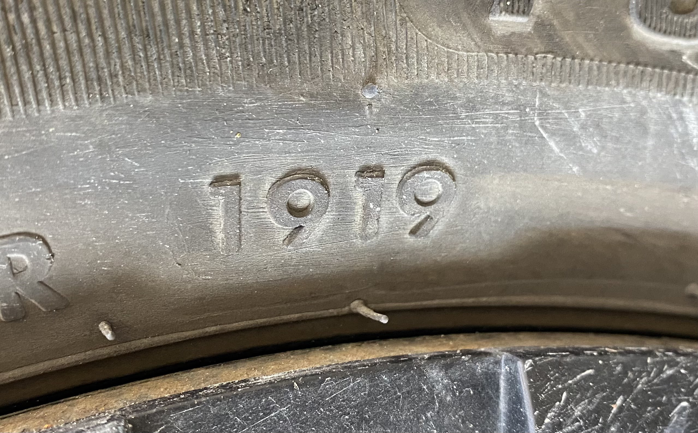

Rainures
Pour évacuer l'eau (aquaplanage)
Profondeur minimal des rainures principales : 1,6 mm (cyclo : 1 mm)
TWI : témoin d'usure

Interdit de retailler ou de redessiner un pneu usé
Structure
Soit radial soit diagonal
Sur un même essieu il faut des pneus de même structure
Diagonal devant + radial derrière : autorisé (Droit)
Radial devant + diagonal derrière : interdit (Ridicule)
Pression
Vérifier régulièrement (1 x par mois) et à froid (avant d'avoir roulé)
Augmenter la pression pour un long voyage fort chargé; ne jamais diminuer la pression
Mauvaise conditions
Pneus à clous
du 1/11 au 31/3
Chaînes
si nécessaire (neige, verglas)
Codes
exemple :
155 / 65 R 14 75 T

155
largeur de la bande de roulement en mm
65
rapport entre la hauteur et la largeur
R
Structure du pneu, R = radial ou D = diagonal
14
diamètre de la jante en pouce
1919
date de fabrication (19éme semaine de 2019)
Lors d'une crevaison
Serrer
Sens : aiguilles d'une montre
ordre : en croix
Desserrer
Sens : inverse aiguille d'une montre
ordre : sans importance